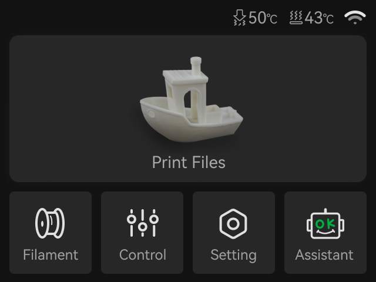
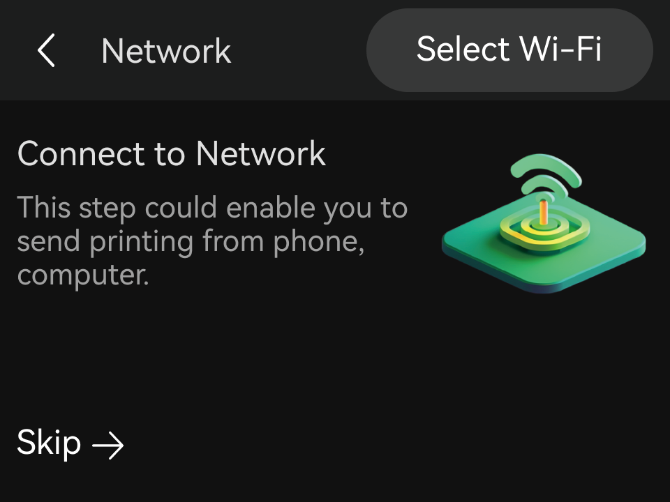
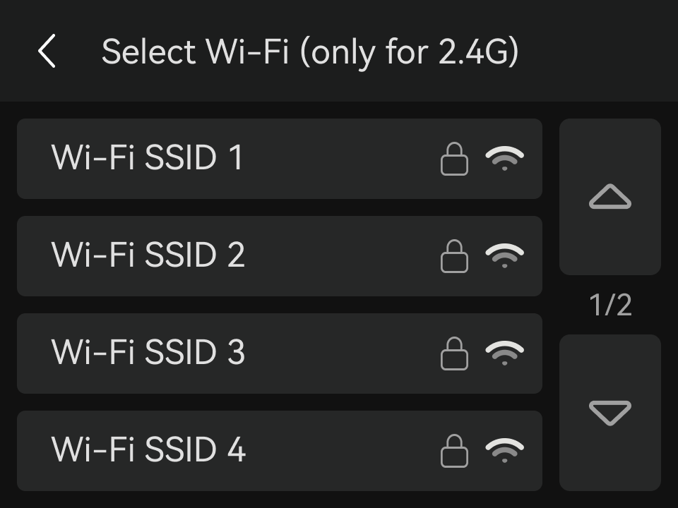
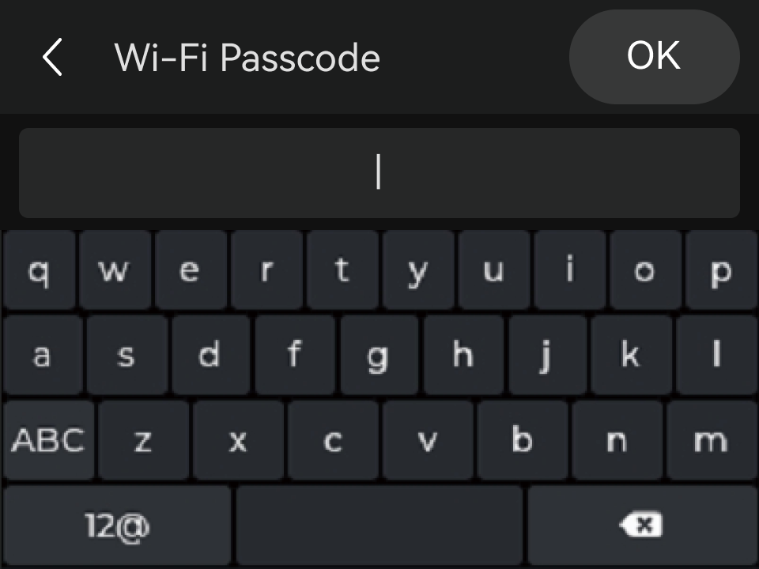

Tài liệu kỹ thuật cho người vận hành: clone giao diện Bambu Studio (bấm từng nút để hiểu), quy trình chuẩn khi bắt đầu in, bộ thông số file mẫu PLA & PETG, chọn đầu phun, cấu hình màu AMS, gắn support, và xử lý lỗi setup thường gặp.




Lắp đúng Textured PEI Plate, mặt sạch. Rửa nước nóng + xà phòng, không chạm tay lên mặt in. Gạt sạch nhựa thừa quanh nozzle.
Nạp đủ màu vào 4 khe AMS, đúng loại. PETG/TPU/PVA phải sấy trước (khí hậu VN ẩm). Bó 4 ống PTFE gọn, AMS cách máy ~50mm.
Chọn Bambu Lab A1, bật AMS, kết nối Wi-Fi/LAN (cùng tài khoản). Bấm Sync info để lấy màu nhựa thật từ máy.
Kéo-thả .3mf (giữ màu/preset) hoặc .stl/.step. Auto-arrange; xoay (R) để lực chính vuông góc mặt lớp & giảm support.
Chọn 0.20mm Standard rồi tinh chỉnh theo nhựa (xem file mẫu mục ③): Quality · Strength · Speed · Support · Others.
Gán filament theo part hoặc Color painting; bật support (Tree/Normal) cho phần đua. Kiểm tra AMS mapping.
Bấm Slice plate. Sang Preview xem thời gian, lượng nhựa, lượng xả đổi màu. Đổi color scheme = Speed để bắt vân belt (outer wall ~120mm/s).
Bấm Print plate → khớp AMS mapping → bật Bed Leveling + Flow calibration → gửi. Đảm bảo có thẻ microSD trong máy.
Quan sát lớp 1 (quyết định 90% thành công) qua camera/Bambu Handy. Chờ bàn nguội mới gỡ mẫu; gỡ support trong 2 giờ.
| Nhóm | Thông số | Giá trị |
|---|---|---|
| Printer | Nozzle diameter | 0.2 mm |
| Quality | Layer height | 0.08–0.12 |
| Initial layer | 0.10 | |
| Line width | 0.20–0.25 | |
| Strength | Wall loops | 3–4 |
| Sparse infill | 10–15% | |
| Speed | Outer wall | 40–80 |
| Max volumetric | ~2 mm³/s | |
| Filament | Nozzle/Bed (PLA) | 220 / 55 |
| Support mini | Top Z / type | 0.25–0.28 · Tree |
| Nozzle | Layer | Dùng khi | Đánh đổi / lưu ý |
|---|---|---|---|
| 0.2mm CHI TIẾT | 0.06–0.14 | Mini, chữ nhỏ, miniature | Rất chậm · cấm nhựa sợi/Glow (tắc) |
| 0.4mm MẶC ĐỊNH | 0.08–0.28 | 90% nhu cầu — cân bằng tốt nhất | Đầu kèm máy |
| 0.6mm BỀN/NHANH | 0.10–0.42 | Đồ chức năng, in nhanh, nhựa sợi đỡ tắc | Mất chi tiết nhỏ |
| 0.8mm SIÊU NHANH | 0.10–0.60 | Vật lớn, in nháp, nhựa trong suốt | Thô · tốn nhựa/lớp |
| Cách | Thao tác | Dùng khi |
|---|---|---|
| Gán theo part | Chọn object → filament, hoặc phím 1–9 | Nhiều part rời |
| Color painting | Công cụ cọ tô lên bề mặt | 1 khối liền, logo |
| Theo lớp | Đổi filament theo height range | Đổi màu theo tầng |
| Chế độ | Cách hoạt động |
|---|---|
| Normal/Tree/Hybrid (auto) MẶC ĐỊNH | Bật support + chọn type → tự sinh đỡ ở MỌI overhang dốc < 30°. Normal=mặt phẳng rộng · Tree=điểm treo nhỏ · Hybrid=tự trộn. |
| Support painting (enforcer/blocker) | Tuỳ chọn: tô “bắt buộc đỡ” (enforcer) hoặc “cấm đỡ” (blocker) CHỒNG lên auto để thêm/bớt vùng. |
| Normal/Tree (manual) | Tắt auto-detect, CHỈ sinh đỡ ở vùng bạn vẽ enforcer. |
| Thông số | Giá trị | Ý nghĩa |
|---|---|---|
| Threshold angle | 30° | Dốc < ngưỡng mới sinh đỡ |
| Top Z distance | 0.2 / 0 | 0.2 cùng nhựa · 0 với nhựa đỡ riêng |
| Top interface layers | 2–3 | Mặt đỡ phẳng, ít rủ |
| Triệu chứng | Nguyên nhân | Sửa |
|---|---|---|
| Lớp 1 không bám | Sai loại Plate → sai Z & nhiệt bed | Chọn đúng Bed type |
| Lớp 1 lốm đốm | Bàn bẩn / chưa leveling | Rửa bàn + Bed Leveling ON |
| Thừa/thiếu nhựa, hở mặt | Sai size nozzle / flow | Đúng ⌀ + Flow calibration |
| Kéo râu, sùi bọt | Nhựa ẩm chưa sấy | Sấy nhựa; retraction ≤2mm |
| Triệu chứng | Nguyên nhân | Sửa |
|---|---|---|
| Tắc giữa chừng (PLA) | Heat creep (ambient >30°C) | Hạ bed 5–10°C, mở thoáng |
| Cong vênh / bong góc | Bed thấp, không Brim | Bật Brim, tăng bed, keo |
| Màu lẫn (đa màu) | Flush ít / thiếu prime tower | Bật prime tower, tăng flush |
| Báo lỗi gửi in | Quên thẻ microSD | A1 cần SD (kèm 32GB) |
| Nút | Tác dụng |
|---|---|
| Slice plate | Tính G-code (chưa gửi). Sau đó xem Preview. |
| Print plate / Send | Gửi qua Wi-Fi/cloud tới A1 → in. |
| Export G-code/.3mf | Lưu ra microSD để in offline. |
Scene Properties → Units: Unit System = None rồi model sao cho 1 unit = 1mm. (Hoặc Metric → Length = Millimeters.)
Chọn vật → Ctrl+A → All Transforms. Đưa Scale về 1.0, Rotation 0 — không thì sai size & normal khi xuất.
Bật add-on 3D-Print Toolbox (Preferences → Add-ons/Extensions) → tab Check → Check All → sửa Non-manifold / Make Manifold. Edit Mode → Shift+N để normal hướng ra ngoài.
Mirror / Subdivision / Solidify... → Apply hết trước khi xuất (slicer chỉ đọc mesh thật).
Object → Set Origin → Origin to Geometry; hạ đáy vật xuống Z = 0 để Bambu đặt thẳng lên bàn.
File → Export → 3MF (đa màu/đa part, giữ mm) hoặc STL (1 màu, phổ biến). Nhập vào Bambu rồi kiểm tra lại kích thước (mm).
| Định dạng | Dùng khi | Lưu ý |
|---|---|---|
| STL (binary) | 1 màu, đơn giản | Scale=1 (nếu units None) · trục mặc định Z-up OK |
| 3MF | Đa màu / đa part, giữ mm | Cần add-on “3MF”; mỗi object → 1 part để gán filament |
| OBJ | Đa object | Tách object theo màu → Bambu thành part |
| Tiêu chí | Tối thiểu |
|---|---|
| Bề dày thành | ≥ 0.8 mm (2 line) · tuyệt đối ≥ 0.4 |
| Chi tiết nổi/lõm | ≥ ⌀nozzle (0.4 · hoặc 0.2) |
| Lỗ / khe (dung sai) | +0.2–0.4 mm |
| Overhang không cần đỡ | ≤ 45° |
| Bridge tự bắc | < ~5 mm |
| Vật liệu | Nozzle °C | Bed °C | Max vol | Flow | Fan | Đặc tính & lưu ý |
|---|---|---|---|---|---|---|
| PLA Basic | 220 | 55 (Cool 35) | ~21 | 0.98 | 100% | Dễ nhất, bền tốt, mặt bóng nhẹ. |
| PLA Matte | 220 (215–230) | 55–60 | ~18–21 | 0.98 | 100% | Mặt nhám mờ đẹp; GIÒN hơn → giữ wall ≥3; hay cần +5–15°C nếu tắc/kém; KHÔNG cần ironing; lớp 1 khó bám → 30mm/s + rửa bàn. |
| PLA Lite | 210–220 | 55 | ~15–20 | 0.98 | 100% | Kinh tế / in nháp nhanh; độ bền & bề mặt thấp hơn Basic một chút. |
| Cặp đổi màu | Flushing |
|---|---|
| Tối → Sáng (đen→trắng/vàng) | XẢ NHIỀU (khó sạch) |
| Sáng → Tối (trắng→đen) | Xả ít |
| Cùng tông | Rất ít |
| Lựa chọn | Kết quả | Dùng khi |
|---|---|---|
| Inner/Outer (mặc định) | Overhang ít sag; mặt ngoài kém hơn | Nhiều mặt đua/treo |
| Outer/Inner | Mặt ngoài đẹp nhất + dung sai chuẩn; overhang dễ sag | Vật trưng bày, cần bề mặt đẹp |
| Inner/Outer/Inner (cần ≥3 wall) | TỐI ƯU NHẤT: mặt đẹp + dung sai + overhang tốt | Khuyến nghị khi wall ≥3 |